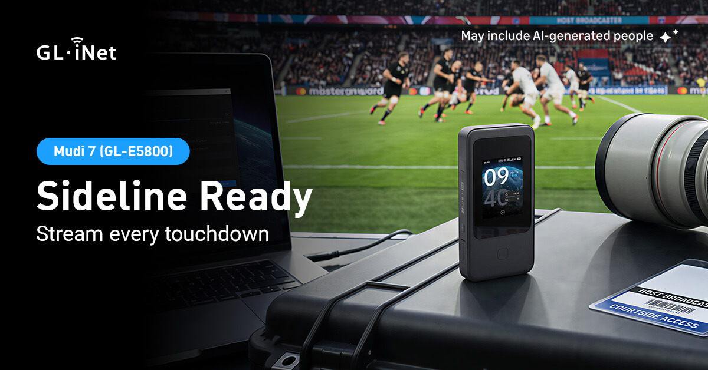
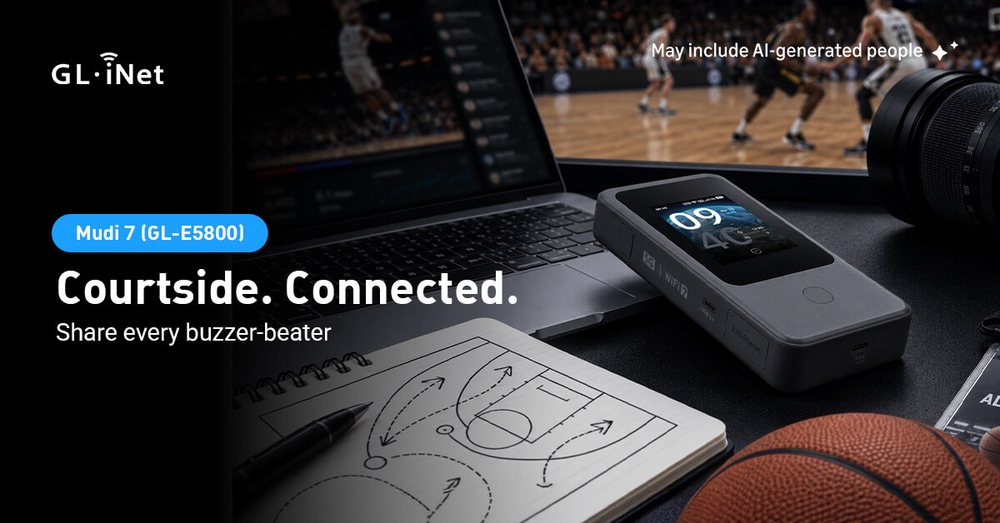
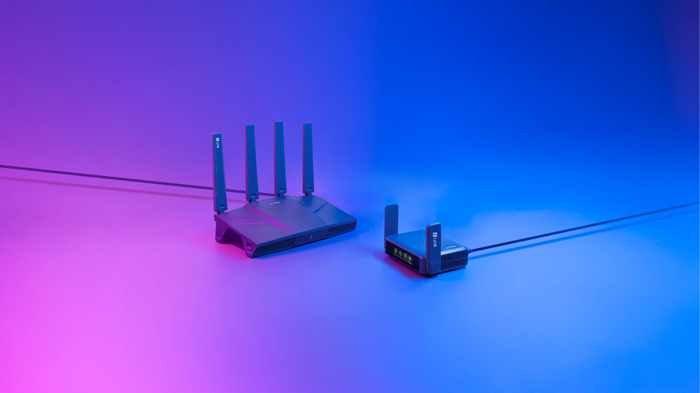
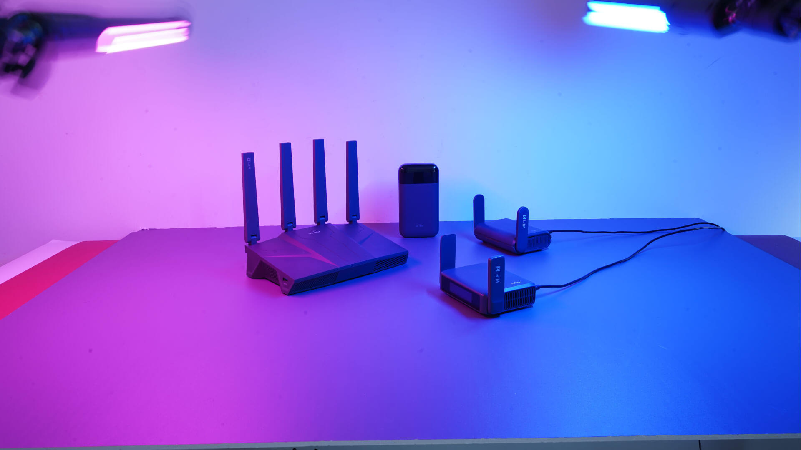
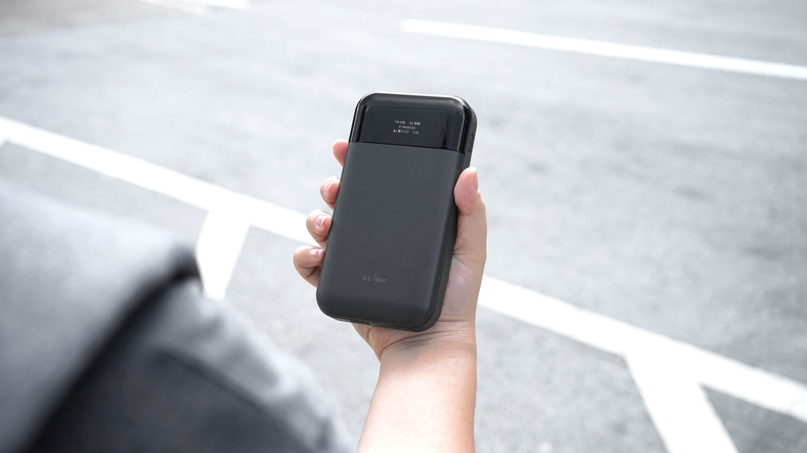
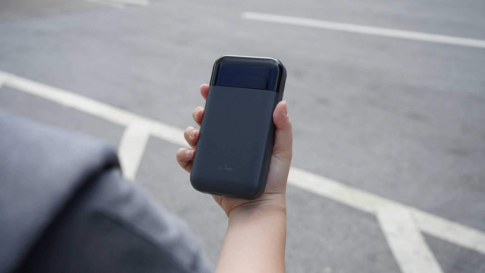

Social Media Post
Engaging promotional graphics designed for Instagram and Facebook to highlight products, seasonal sales, and user tutorials.
Overview
Promotional graphics for Instagram and Facebook that highlight GL.iNet products, seasonal sales, and user tutorials. Each post is designed for feed and stories — clear hierarchy, product focus, and messaging that stops the scroll and drives engagement.
Focus
Make technical networking products feel approachable and desirable in a fast-scrolling social feed — while staying on-brand and conversion-minded.
Product spotlight
Hero product shots with short benefit lines so features read in under a second.
Seasonal sales
Promo frames for launches, holidays, and limited offers without cluttering the layout.
Tutorials
Step or tip cards that teach setup and features and invite saves and shares.
Feed & advertisement
Formats tuned for different size so the same campaign works across placements.
Campaign types
Three recurring series: product launches and feature callouts, promotional sales, customer reviews, look for beta testers and announcement posts that support marketing teams.
Formats
Assets are built for both static feed posts and online ad, with consistent type, color, and product treatment so the brand stays recognizable across the grid.


Process
From brief to publish: align on message and offer, design for feed and stories, then hand off export-ready files to marketing.
Brief
- Product / offer focus
- Audience & CTA
- Platforms & sizes
Design
- Layout & hierarchy
- Product photography
- Copy & icons
Deliver
- Feed & story exports
- Variants for A/B
- Ready for schedule
Product photography: drag to compare studio capture and final retouch.


Before After

Before AfterOutcome
A library of Instagram and Facebook graphics that support product launches, seasonal campaigns, and how-to content — consistent with GL.iNet’s brand and optimized for social placements.